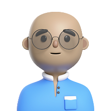
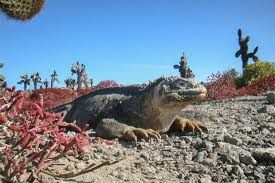
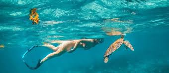

Explora el mundo de los dinosaurios como nunca antes y descubre criaturas fascinantes en cada rincón del parque.
El rey de los tiranosaurios, conocido por su ferocidad.
Pequeño pero astuto cazador, famoso por su inteligencia y agilidad.
Con sus impresionantes cuernos, este dinosaurio es un ícono del período Cretácico.
Uno de los dinosaurios de cuello largo más conocidos, destacado por su tamaño masivo.
El maestro del cielo del Mesozoico, dominante en los aires.
Gigante del océano, temido por todos los habitantes marinos de su tiempo.
|  | |
|---|---|
| Marcos | Julio |
Experimentado en servicios informaticos, |
Sirvio como seguridad de un boliche |
|  | veni a visitar los lagartos del desierto |
|  | veni a bucear con las tortugas en la costa Este |